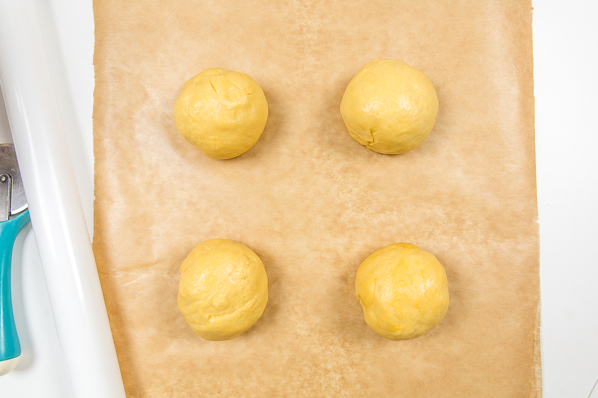
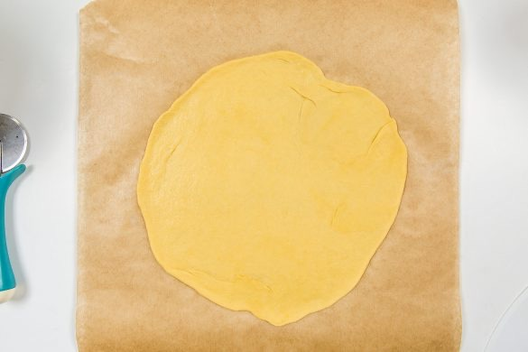
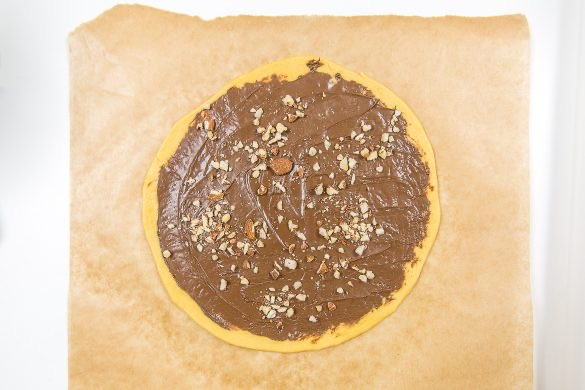
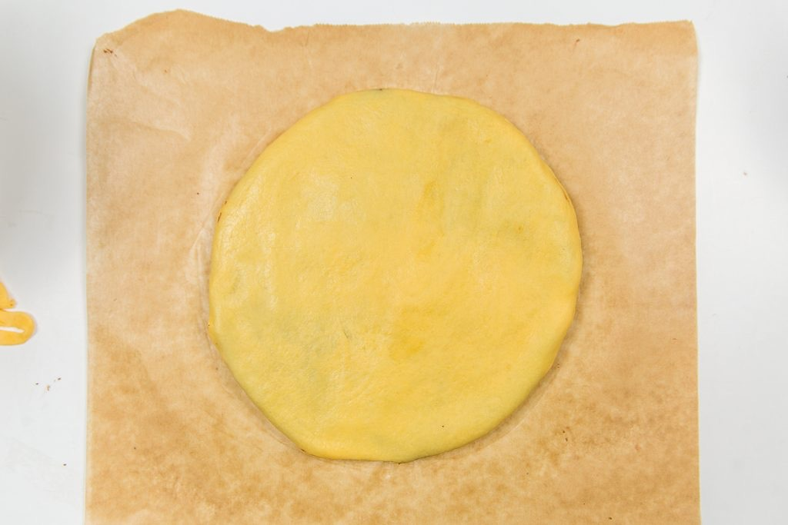
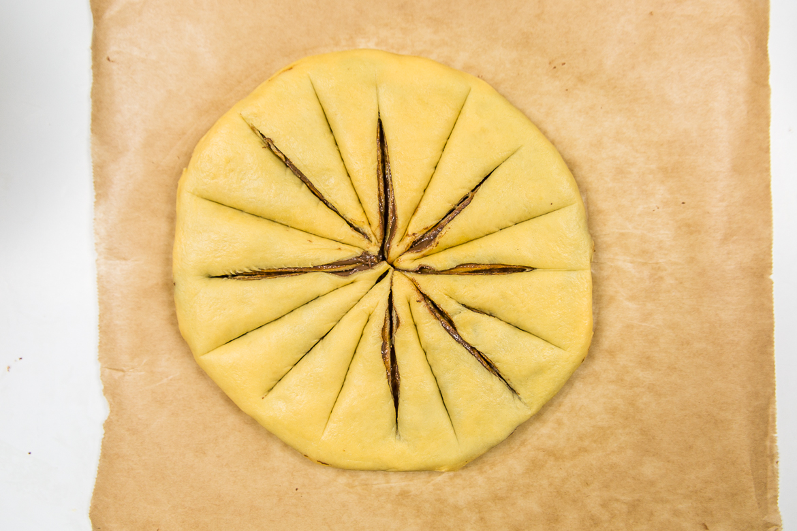
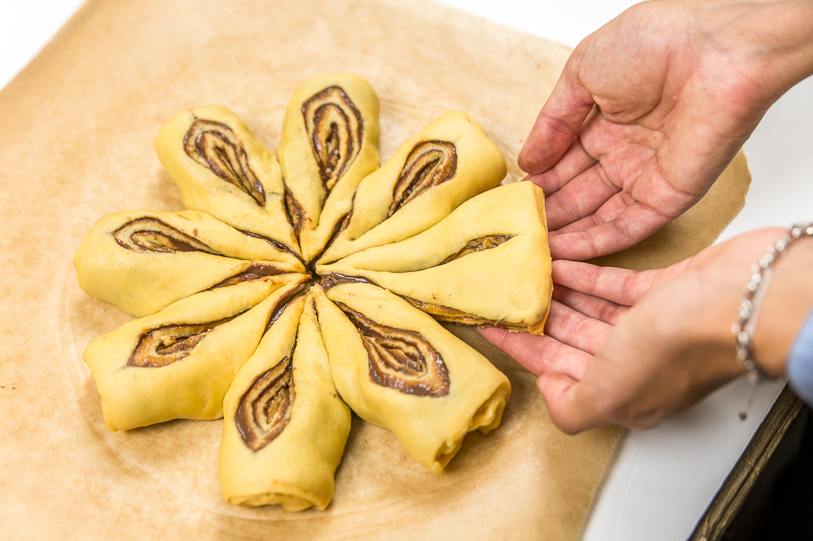
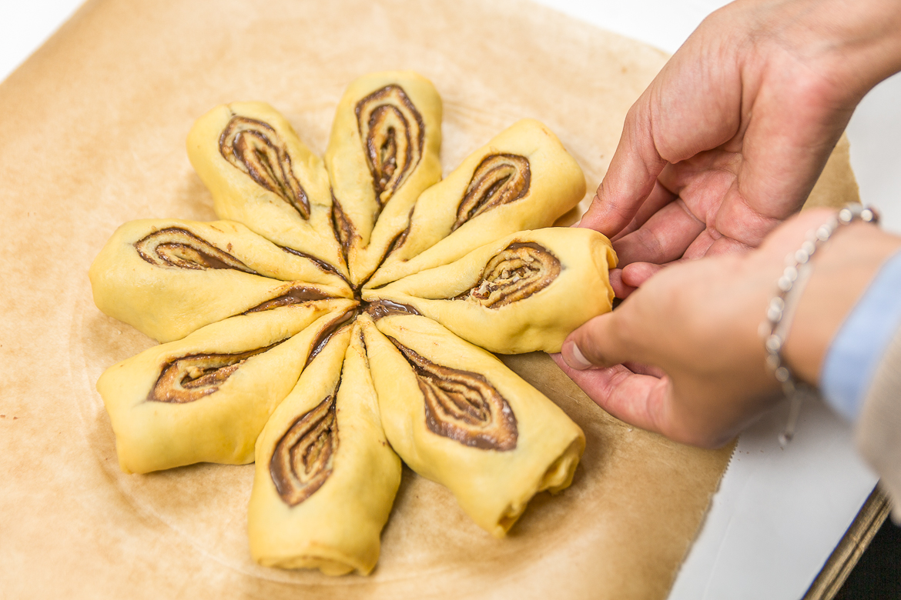
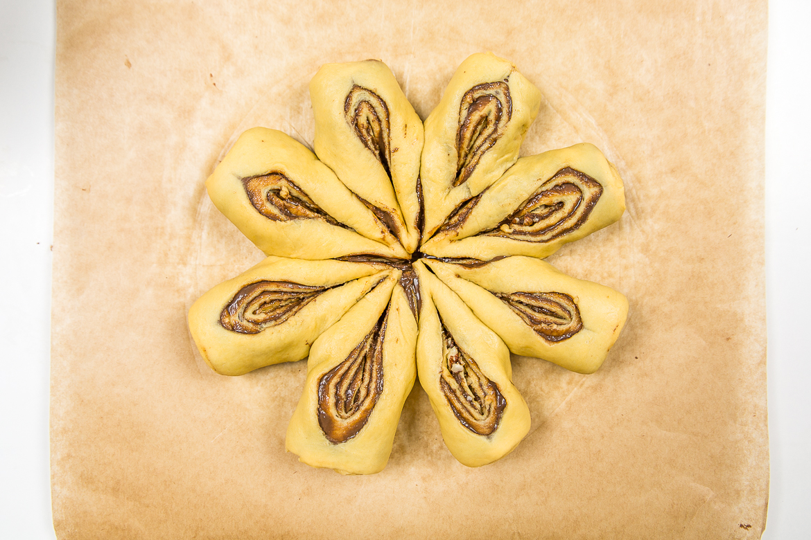

Brioche étoile au chocolat

Aujourd’hui je vous retrouve avec une recette idéale pour un dimanche matin d’hiver, une brioche étoile au chocolat à tartiner.
Cette recette je l’avais faite pour les fêtes de fin d’année (vu que c’est une brioche étoile ça faisait penser à Noël^^) et j’avais totalement oublié de mettre la recette en ligne. Pour ceux qui pensent que la recette est trop difficile à cause de sa forme, sachez que je l’ai façonné avec une petite fille de 6 ans d’où quelques petites imperfections mais cela veut surtout dire que si une petite fille y arrive n’importe quel « adulte » peut y arriver et en mieux ;). Pour en revenir à cette brioche, j’ai fait la pâte avec de la purée de citrouille (rassurez vous on ne sent pas le goût de la citrouille) et cette pâte à brioche est vraiment l’une des meilleure! J’ai parfumé l’intérieur avec de la pâte à tartiner au chocolat (vous savez celle de Michalak) et j’y ai ajouté sur une moitié des amandes et des noisettes concassées. La partie qui l’emporte est celle avec les amandes et les noisettes qui apportaient un vrai plus en terme de goût mais c’est comme vous voulez. En ce moment, (c’est un peu comme ça tous les hiver) je suis dingue de brioche et j’attends donc patiemment que le week-end arrive et que l’on soit dimanche matin.. Un chocolat chaud, une brioche au chocolat (ou à la cannelle), un bon petit film et rien ne me rendra plus heureuse pour faire passer un dimanche froid et pluvieux. Pour réaliser cette recette j’ai essayé de prendre quelques photos pendant le façonnage pour vous rendre la tâche plus facile, j’espère que ça vous aidera :)! N’hésitez pas à me dire ce que vous avez pensé de la recette et si vous l’avez trouvé bonne (ou pas^^), je me ferai un plaisir de répondre à vos petits mots!
Ingrédients
- Lait - 60ml
- Oeuf - 1 oeuf + 1 jaune
- Sucre - 60g
- Levure de boulanger instantanée - 6g
- Purée de citrouille - 110g
- Farine - 380g
- Sel - 6g
- Beurre - 80g
- Pate à tartiner au chocolat - 150g environ
- Amandes, noisettes concassées - 1 bonne poignée
- Jaune d'oeuf - 1
Instructions
- Coupez le beurre en morceaux et laissez-le à température ambiante pour qu'il ramollisse
- Faites tiédir le lait, ajouter la levure et une pincée de sucre
- Laissez reposer ce mélange 15-20 minutes
- Dans le bol de votre robot, versez le lait tiède avec la levure, le sucre, l’œuf et le jaune d’œuf puis la purée de citrouille Astuce: Si vous voulez faire vous-même la purée de citrouille : préchauffer le four à 180°C Couper la citrouille en deux et la vider de ses graines etc Mettre les deux parties de la citrouille face vers le bas sur votre plaque allant au four Cuire 30-45 minutes (selon sa taille), elle doit ramollir et la chair doit pouvoir se prélever facilement La laisser refroidir côté chair vers le haut cette fois Prélever la chair en vous servant d'une cuillère, l'écraser à la fourchette et c'est prêt ! Si jamais elle rend trop d'eau laissez-la essorez dans une passoire
- Ajoutez la farine en dernier par dessus
- Pétrir jusqu'à obtenir une belle pâte à brioche (pétrir pendant environ 12-15 minutes)
- Au bout des 15 première minutes de pétrissage, ajoutez petit à petit (en 2-3fois) le beurre coupé en morceaux. Pensez à bien pétrir entre chaque ajout de beurre et à n'en rajouter que quand il a bien était incorporé à la pâte
- Huilez un récipient (avec une huile neutre) et déposez la pâte obtenue à l'interieur
- Couvrir de film alimentaire et laissez au frais toute une nuit J'ai fait cette recette plusieurs fois et je n'ai pas toujours eu le temps de laisser toute unenuit (l'envie étant trop pressante). J'ai couvert d'un torchon et j'ai laisser dans mon four chaud (environ 25°) pendant 2h et ça a aussi très bien fonctionné
- La pâte doit avoir doublé de volume
- Diviser la pâte en quatre morceaux égaux
- Étalez un premier morceaux sous la forme d'un cercle (sur du papier sulfurisé) Pour étaler votre pâte à brioche simplement, déposez votre pâte entre deux feuilles de papier sulfurisé et étalez au rouleau
- Retaillez votre cercle avec un emporte pièce (moi j'ai utilisé un moule à gâteau de 20cm)
- Étalez une première couche de pâte à tartiner et parsemez d'amandes et noisettes concassées
- Formez votre deuxième cercle de pâte de la même façon que le premier
- Étalez de la pâte à tartiner et ajoutez amandes et noisettes
- Déposez-le sur le premier cercle
- Et ainsi de suite
- Sur le dernier cercle on n’étalera pas de chocolat vu que ce sera le dessus de la brioche
- Astuce : pour avoir une découpe bien nette et éviter les bavures de chocolat à la découpe, placez votre brioche au frais pendant 1 à 2h (vous pouvez choisir ne pas attendre aussi^^)
- Retaillez les contours de votre brioche si nécessaire pour avoir un cercle presque parfait
- Préchauffez le four à 200°C
- Coupez votre brioche comme sur la photo Il faut faire 16 triangles à peu près égaux et ne pas couper les bords de la brioche
- Coupez ensuite les rebords d'un triangle sur deux. Il faut avoir deux petits triangles ensemble (les photos expliquent bien mieux que moi)
- Attrapez deux petits triangles réunis et tournez-les vers l'extérieur
- Dorez la brioche
- Enfournez dans un four à 200°C et baissez immédiatement la température à 160°C (en chaleur tournante) sinon 180°
- Laissez cuire environ 30 minutes
- La brioche doit être bien dorée
- A déguster chaud/tiède avec un bon chocolat chaud!








Les tips de la communauté
Très bien reçue avec admiration pour l'originalité de la purée de citrouille dans la brioche. Testeurs trouvent la recette surprenante mais séduisante. La technique de brioche avec moelleux particulier est appréciée et facilite les levées.
Astuces
- La purée de citrouille apporte beaucoup de moelleux à la pâte
- Acheter purée surgelée chez Picard ou la faire maison
- Purée de citrouille évite la surcharge en sucre blanc
- Levure sèche à 8g ou fraîche à 12g selon le type utilisé
- Brioche sublime pour un cocooning weekend avec film et boisson chaude
Variantes suggérées
- Adapter la levure: sèche 8g ou fraîche 12g